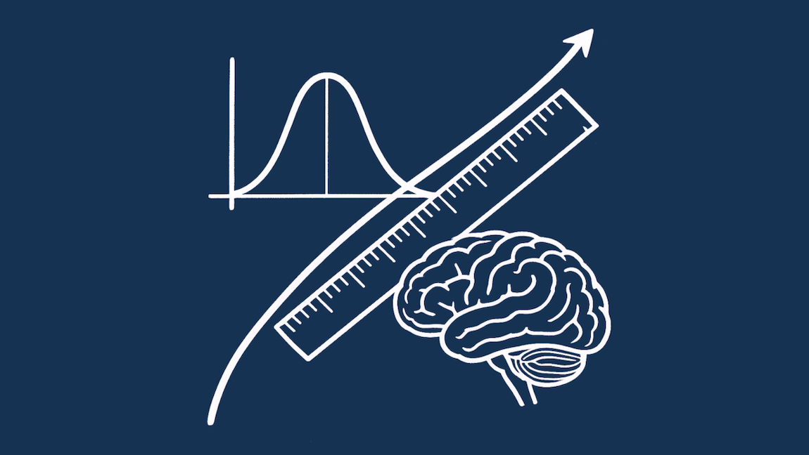

Ultima modifica: 2025-08-31 20:55:57 CEST. Versione 0.0.1-alphaOltre i punteggi
Elementi di psicometria per la neuropsicologia clinica

Premesse
Obiettivo del libro
Questo libro ha come obiettivo fornire le conoscenze fondamentali di psicometria e di statistica da utilizzare nella pratica clinica neuropsicologica. Pur avendo questo principale focus, il libro contiene anche delle sezioni dedicate alle applicazioni nell’ambito della neuropsicologia forense e alla psicologia clinica in generale. Nel corso dei suoi capitoli sono trattati diversi aspetti psicometrici e statistici in un modo che cerca di essere chiaro e accessibile, cercando di non banalizzare la complessità degli argomenti trattati. A differenza di altri testi di psicometria disponibili, il libro si focalizza specificamente sull’ applicazione pratica delle conoscenze psicometriche e statistiche. Al momento iniziale di scrittura di questo libro è in programma la scrittura di due volumi, separati ma strettamente connessi. Il primo (quello presente) è destinato proprio a chi si occupa di clinica: contiene tutti gli elementi fondamentali, ma evita approfondimenti relativi alle formule e non scende nei dettagli più tecnici. Il secondo, più specialistico, sarà sviluppato in un secondo momento e sarà destinato a chiunque voglia conoscere più in dettaglio gli psicometrici e statistici rilevanti per la neuropsicologia clinica. Quest’ultimo volume sarà dedicato anche a chi voglia effettuare attività di ricerca nell’ambito e conterrà codice in R per approfondire gli argomenti esplorati,
Contribuire a questo libro
Questo libro è pensato per professioniste/i (principalmente neuropsicologhe/i cliniche/i e forensi) e idealmente è anche sviluppato insieme a loro in maniera collaborativa. Se hai un suggerimento su un argomento da trattare, su come migliorare una spiegazione, se vuoi segnalare un errore di battitura o in generale per qualsiasi consiglio, puoi usare i pulsanti “Segnala un problema” e “Modifica questa pagina” che trovi a destra nella versione web del libro. In alternativa puoi scrivermi una mail a giorgio.arcara@gmail.com . Cercherò di integrare ogni segnalazione/richiesta e il tuo nome verrà inserito all’interno dei ringraziamenti del libro per riconoscere il tuo contributo.
Due principi fondamentali
Ci sono due importanti principi alla base di questo libro che vorrei esplicitare sin dall’inizio:
- Le conoscenze psicometriche possono e dovrebbero essere incorporate nella routine clinica, portando ad un utilizzo più consapevole dei test neuropsicologici e psicologici, delle loro potenzialità e limiti, e quindi ad interpretazioni più motivate e ragionate.
- Le conoscenze psicometriche sono solo una parte delle conoscenze necessarie per la pratica clinica. Conoscenze teoriche (es. di neuropsicologia cognitiva e clinica) e cliniche (es. su come condurre un colloquio) sono altrettanto fondamentali. Questo dovrebbe essere scontato, ma è importante chiarire questo punto per una corretta lettura del libro e dei suoi contenuti.
Costo del libro (nessuno)
Il libro è (e sarà sempre) completamente gratuito
Tutto il materiale è infatti rilasciato con licenza Creative Commons 4.0 CC BY-NC-SA.

Con questa licenza sei libera/o di scaricare, stampare e distribuire questa guida Puoi anche copiare parte dei contenuti e modificarli e utilizzarli per altri libri o presentazioni, purché sia citata la fonte di orgine. Al momento della scrittura sto valutando se metterlo anche in vendita tramite una piattaforma online, ma questo non toglie che la versione online sarà sempre gratuita. Se utilizzi o distribuisci il materiale contenuto in questo libro ti prego di utilizzare la seguente citazione:
Giorgio Arcara (2025), “Oltre i punteggi. Elementi di psicometria per la neuropsicologia clinica”, rilasciato sotto licenza CC BY-NC-SA 4.0
Per alcune informazioni aggiuntive sulle scelte stilistiche/redazionali guarda la pagina Note di redazione
Indice Provvisorio
Di seguito trovi un indice provvisorio del libro. Questo indice potrà essere modificato sulla base dei commenti ricevuti durante il suo sviluppo.
Introduzione
- Il protagonosta del libro: Il test neuropsicologico
- Il libro in breve
- Una metafora utile
- Cosa il libro NON tratta
- Sezioni speciali: Approfondimenti, Nella pratica clinica, Errori comuni
1. Psicometria per la Neuropsicologia clinica
- Principi di teoria della misurazione
- I test
- Test di prestazione tipica
- Test di prestazione massima
- Teoria Classica dei test
- Validità ed Affidabilità
- Tipi di Validità e perché sono importanti
- Affidabilità
- Tipi di affidabilità e perché sono importanti
- Introduzione alla Item Response Theory
- Nella pratica clinica: Come usare Affidabilità e Validità nella pratica clinica per scegliere i test
- Nella pratica clinica: Come usare Affidabilità e Validità per interpretare i test
- Errori comuni nel considerare gli aspetti psicometrici dei test.
2. Identificare Deficit e danni cognitivi
- I concetti di deficit e danno in valutazione dell’adulto
- Il concetto di deficit in età evolutiva
- I dati normativi e il cut-off di normalità
- Come si ottengono i dati normativi
- Metodi per calcolare i cut-off di normalità
- Z-score e percentili
- Metodi basati su regressione
- I Punteggi Equivalenti (Capitani, 1987)
- Il metodo di Crawford & Howell (1998) per il caso singolo
- Altri metodi
- Aspetti importanti da considerare nell’utilizzare i dati normativi
- Nella pratica clinica: esempi di utilizzo dei cut-offs
- Errori comuni nell’utilizzo dei cut-offs di normalità
- Approfondimento: Perché usiamo i cut-off basati su soggetti normali?
- Approfondimento: il MoCA e la sua introduzione in Italia
3. Identificare patologie o condizioni di interesse
- Il gold standard in neuropsicologia clinica e forense
- Cut-off di discriminazione
- Sensibilità, Specificità e la curva ROC
- Altre misure di performance di identificazione
- Approfondimento pratico: utilizzare test con cut-off di discriminazione
- Errori comuni nell’utilizzo di cut-off di discriminiazione
4. Indagare cambiamenti nel tempo
- Affidabilità test-retest e importanza per studiare cambiamenti nel tempo
- Forme parallele
- Effetto pratica
- Reliable Change Index e altri metodi per cambiamenti nel tempo
- Errori comuni nell’indagare cambiamenti nel tempo
5. Confrontare punteggi a test diversi
- Utilizzo di z-score o percentili.
- Punteggi Equivalenti.
6. Valutazioni forensi e il problema della Simulazione
- La validità di performance
- Identificare la simulazione in una valutazione
7. Il teorema di Bayes e la sua rilevanza in clinica
- Il teorema di Bayes in breve
- Perché il teorema di Bayes è rilevante in neuropsicologia clinica
- Perché il teorema di Bayes è rilevante in neuropsicologia forense
- Errori comuni: cosa può succedere se non si utilizza il Teorema di Bayes nelle interpretazioni.
8. Interpretare i risultati ai test neuropsicologici
- Perché Interpretazione e non Lettura?
- L’ Interpretative Approach nella pratica clinica
- Esempi di interpretazione
- Interpretare risultati contraddittori ai test
- Integrare i risultati ai test con informazioni qualitative
- Interpretare casi anomali
- Conclusioni: il ruolo fondamentale della/del professionista nell’utilizzo dei test.
9. Epistemologia della Neuropsicologia Clinica * Perché è importante un capitolo sull’Epistemologia? * Metodologia ed Epistemologia
Appendice
- Definizioni
- Statistica di base per la neuropsicologia clinica
- Elementi di probabilità
- Campione e popolazione (approfondimento)
- Il concetto di p-value
- Correlazioni
- Correlazione e causa
- Regressioni lineari (in breve)